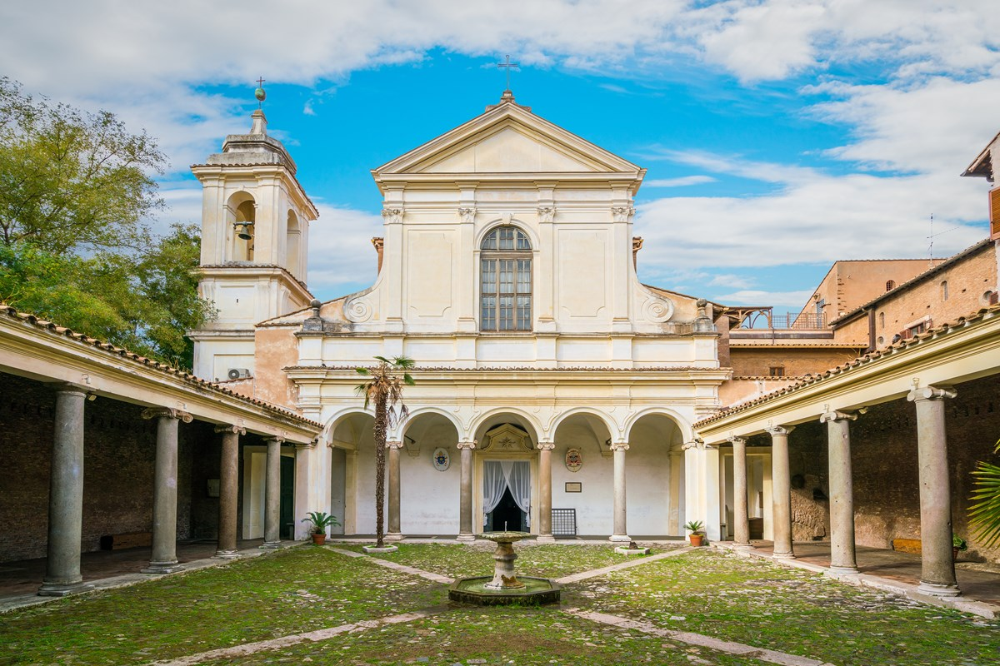

Basilica di San Clemente
The Basilica di San Clemente is a 12th-century church in Rome that sits atop a 4th-century basilica, which in turn was built over a 1st-century Roman house. This unique layering provides a fascinating glimpse into Rome's architectural and religious history.
Known for its stunning mosaics and rich history, the basilica is dedicated to Pope Clement I, who is believed to have been martyred in the area. The lower levels reveal early Christian and pagan structures, offering a remarkable archaeological experience and insight into Rome's complex past.